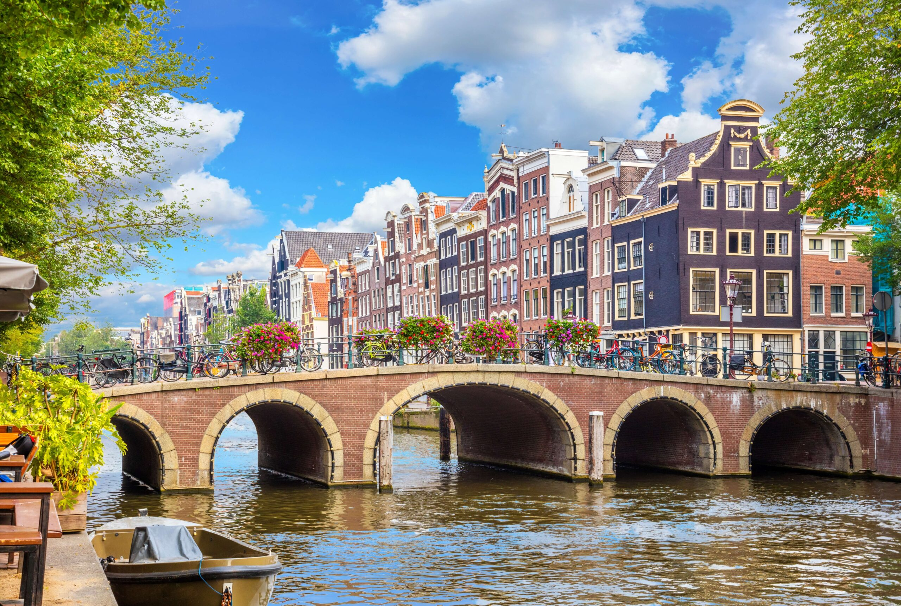
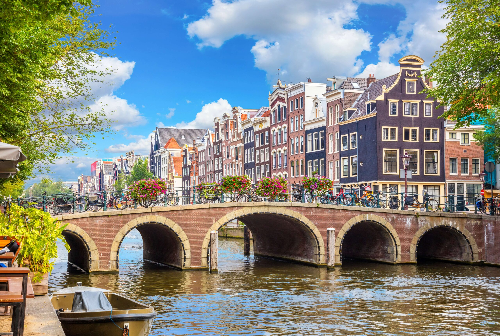

A Holanda oferece muitos destinos turísticos, como Amsterdã, com seus famosos canais e museus, e a charmosa cidade de Haarlem, além das belas paisagens dos campos de tulipas.
A Holanda oferece muitos destinos turísticos, como Amsterdã, com seus famosos canais e museus, e a charmosa cidade de Haarlem, além das belas paisagens dos campos de tulipas.
Os canais de Amsterdam (Amsterdamse grachten, em holandês) são um dos pontos turísticos da Holanda mais tradicionais. Por causa deles, a capital é chamada de Veneza do Norte, lembrando a cidade italiana e suas ilhas. Ao todo, Amsterdam possui 100 km de canais, 90 ilhas e 1500 pontes. Os principais canais são: Herengracht (Canal dos Patrícios), Prinsengracht (Canal do Príncipe), e Keizersgracht (Canal do Imperador).
O Rijksmuseum é o Museu Nacional da Holanda, onde você encontra diversas obras da idade de ouro holandesa, incluindo os trabalhos dos maiores pintores locais e de outros mestres da pintura. Artistas como Rembrandt van Rijn, Johanne Vermeer e Jacob van Ruisdael são um dos pintores presentes na coleção. Por mais que o museu não seja tão famoso quanto o de Van Gogh, ele é um dos locais mais importantes e imperdíveis do país.
O Museu Van Gogh possui a maior coleção de pinturas do pintor Vicent van Gogh no mundo. Este famoso artista holandês é considerado um dos mais influentes dos últimos tempos e o local dedicado a ele oferece uma experiência única sobre impressionismo. Portanto, se você é apaixonado por cultura, arte e história, terá um grande passeio em Amsterdã. Quer uma dica para garantir a sua visita com tranquilidade e evitar filas? Compre de maneira antecipada o ingresso para o museu Van Gogh e vá em um horário tranquilo.
Maior jardim de flores do mundo, o Keukenhof conta com mais de 7 milhões de flores em 32 hectares, 800 variedades de tulipas, 15 km de trilhas e diversas espécies e cores decorando a paisagem e inspirando milhares de fotos. Sem dúvidas, a experiência é inesquecível para pessoas de todas as idades. Por esse motivo, o parque é bem movimentado.